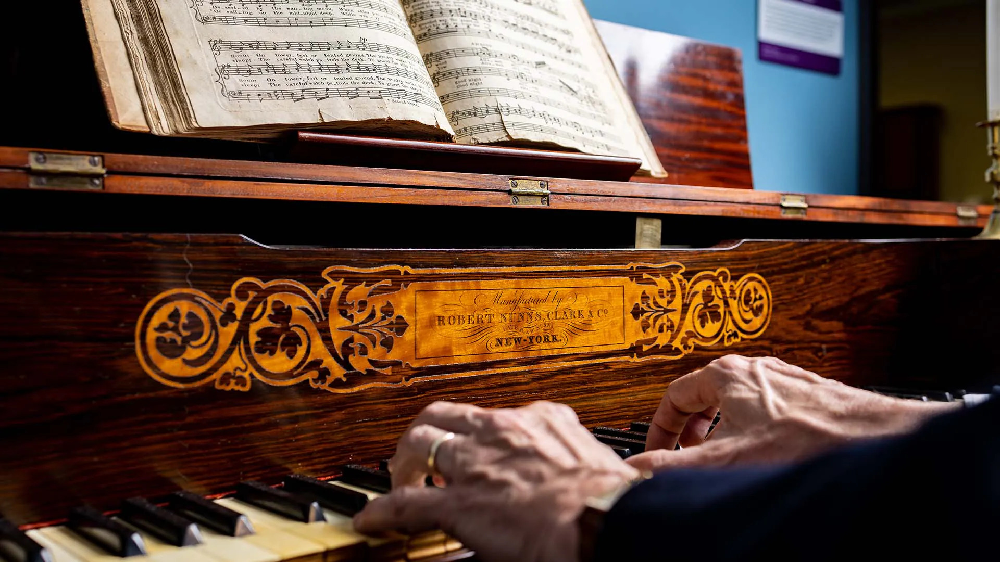
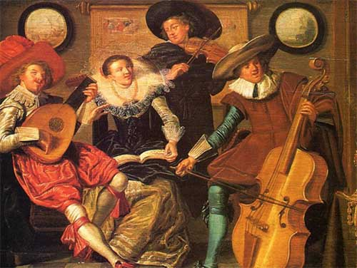
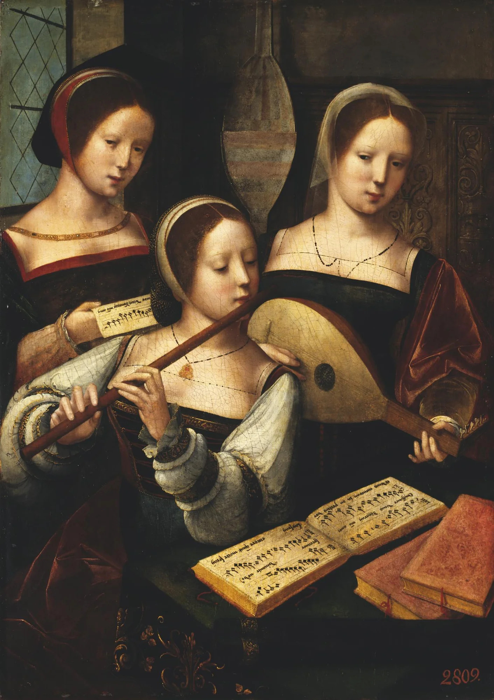
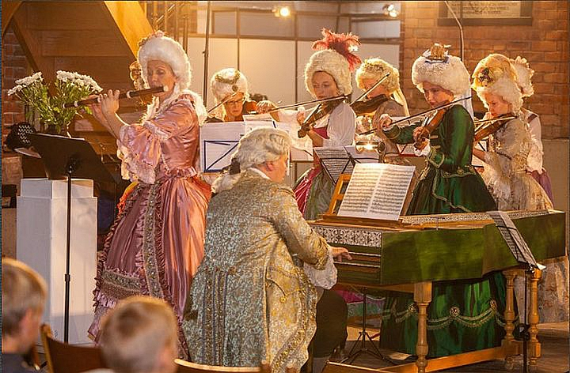
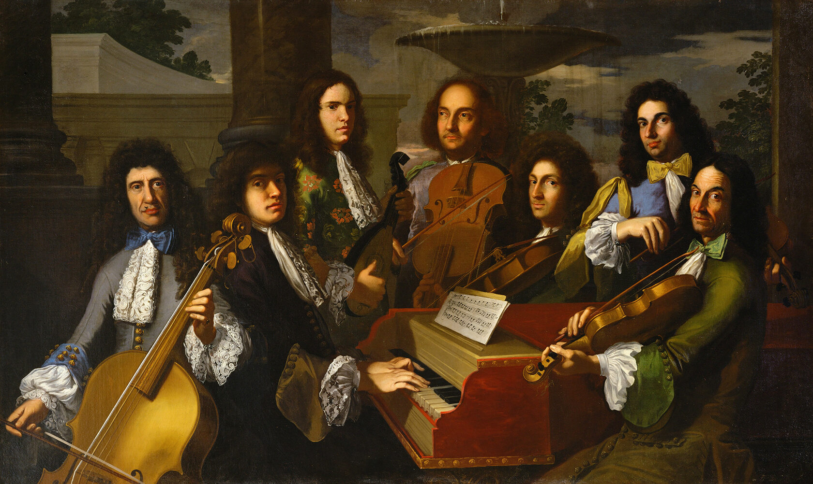
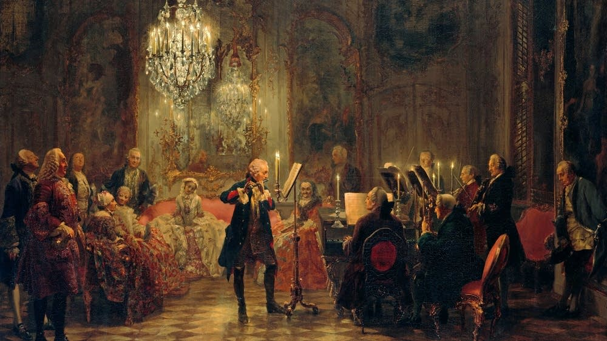
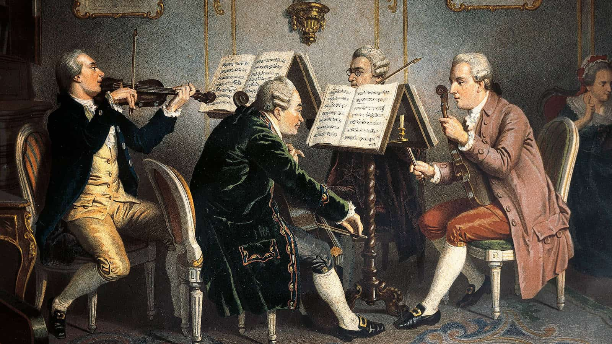
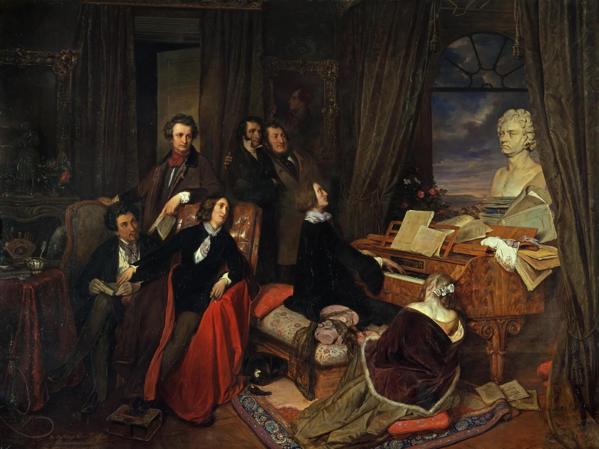
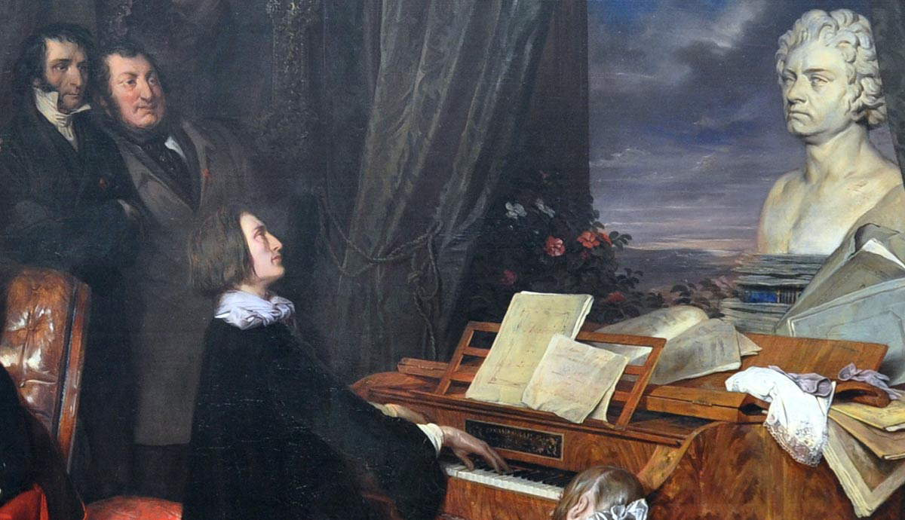

No renesanses līdz mūsdienām
Pieci mūzikas laikmeti, izcili komponisti un skaņdarbi, kas atstājuši paliekošas pēdas mūzikas vēsturē.
Iepazīt laikmetus
Par izstādi
Šajā virtuālajā izstādē jūs varat iepazīties ar mūzikas vēsturi, tās attīstību un nozīmīgākajiem notikumiem. Izstāde piedāvā interaktīvu pieredzi, ļaujot apmeklētājiem izpētīt dažādus laikmetus, mūzikas žanrus un ievērojamus māksliniekus.
Apskatāmie mūzikas posmi
- Renesances mūzika
- Baroks
- Klasikisms
- Romantisms
- Mūsdienu mūzika

Galerija


Renesanse ir vispusīgs kultūras uzplaukums kopš 14.gs. beigām, kas aizsākās Ziemeļitālijā, bet 15. un 16.gs. strauji izplatījās ziemeļu virzienā. Renesanses mērķis bija veidot harmonisku, dabisku un skaistu pasauli, kas arī attiecas uz mūziku. Renesanses centrā bija cilvēks.
Galvenie māklas žanri vēl aizvien bija daudzbalsīga polifona mesa, motete un dziesmas ar latīņu tekstu. Savukārt renesanses laikā pievienojas termins - madrigāls.
Renesanses laika populārākie un izcilākie komponisti bija Orlando di Laso, Mārtiņš Luters, Džovanni Pjerluidži Palestrīna, Džovanni Gabriēli un citi. Galvenie mūzikas žanri bija mesa, motete - daudzbalsīga dziesma, madrigāls.
Populārākie mūzikas instrumenti bija blokflauta, lauta, klavesīns, klavihords un alts.


Baroks ir radies Itālijā, pēc Renesanses stila 16.gs. otraja pusē. Baroka laikmets bija spožs un grezns laiks Eiropas mākslā un kulturā. Baroka laikā ļoti cildināja galmu un baznīcu, tāpēc mūziķi saņēma ļoti labu atbalstu no aristokrātijas.
Baroka mūzika ir dinamiska, galanta, gracioza, rotaļīga, emocionāli spriega.
Ap šo laiku Itālijā radās jauns žanrs - opera. 17. gs. attīstījās visas šī žanra sastāvdaļas tādas kā rečetatīvi, ārijas, ansambļi, kori, orķestra uvertīras u.c.
Populārākie mūzikas komponisti un izpildītāji bija Antonio Vivaldi, Henrijs Pērsels, Fransuā Kuperēns, Johans Sebastiāns Bahs, Georgs Frīdrihs Hendelis.
Populārākie mūzikas instrumenti bija klavesīns, ērģeles, vijole, alts, fagots, flauta, oboja, trompete, čells, kontrobass u.c.


Klasicisms ir 18.-19.gs. mākslas virziens. Viena no klasicisma raksturīgajām pazīmēm ir
mākslas darbu radīšana antīkās kultūras un renesanses tradīcijās. Klasicisma iezīmes muzikā ir mūzikas valodas skaidrība, dziedošas, ritmiskas melodijas, klasicisma ideālus vispilnīgāk atklāj opera, radās mūzikas žanri-simfonija, sonāte, kvartets.
Tiek rīkoti koncerti uz kuriem var nokļūt par naudu. Mūziķi vairāk nav kalpi, bet gan brīvi mākslas cilvēki. Viens no galvenajiem mūziķu mērķiem bija rakstīt mūziku, lai tā būtu saprotama visiem iedzīvotāu slāņiem.
Lai vieglāk izprastu skaņdarbus tika izveidota homofoni harmoniska daudzbalsība. Melodija kļuva izteiktāka.
Nozīmīgākie mūzikas žanri, kas ir saglabājušies līdz mūsdienān ir sonātes un simfonijas.
Klasicisma stils mūzikā pilnīgāko attīstības pakāpi sasniedza Vīnes klasiskās skolas pārstāvju darbos. Jozefa Haidna, Volfganga Amadeja Mocarta un Ludviga van Bēthovena darbos.


Romantisma pamatžanrs mūzikā ir dziesma, dziesmu cikli, instrumentālā mūzikā vadošā loma ir miniatūrai.
Jaunā tematika pieprasa arī krāšņāko muzikālo valodu, kura veidošanā liela loma ir harmonijai. Harmoniju mūzikas teorētiķi uzskata par galveno un noteicošo romantisma stila faktoru mūziku.
Diezgan attīstīts romantiķu darbos ir tonālais plāns, ir daudz noviržu un modulāciju.
Mūzikā romantisms jau ir sastopams Ludviga van Bēthovena skaņdarbos. Bet par pirmajiem romantisma laika mūziķiem tiek uzskatīti Francis Šūberts, Kārlis Maria von Vēbers, Nikolo Paganīni, Džoakīno Rosīni u.c. Bet par spilgtāko romantisma laika komponistu tiek uzskatīts Frideriks Šopēns. Eiropas mūzikas attīstība 19. gadsimtā ieguva vēsturē vēl nepieredzētu
pacēlumu un vērienu. Ārkārtīgi pieauga skaņu mākslas sabiedriskais nozīmīgums un paplašinājās tās ietekmes sfēra, daudzējādā ziņā bagātinājās arī mūzikas izteiksmes līdzekļi. Dominē kamermūzika, programmatiskā mūzika. Ļoti plaši romantisms bija pārstāvēts Vācijas un Austrijas mūzikā.
Mūsdienu mūzika ir 20. gadsimta modernās mūzikas un kaut kā jauna laikmets. Šis laikmets ir bagāts ar dažādu žanru mūziku. Modernajā mūzikas laikmetā rodas poplārā mūzika, kas tiek iedalīta vairākos žanros: pops, roks, tehno, hiphops, kantrī u.c. Mūzikas veidošanā tiek izmantoti ne tikai mūzikas instrumenti, bet gan jau jaunās tehnoloģijas, ar kuru palīdzību mūzika kļūst daudzveidīgāka.
Mūsdienās mūziku izmanto pilnīgi visur un mūzika ir liela sastāvdaļa no mūsu dzīves, to mēs varam dzirdēt kino, spēlēs, teātrī, veikalā, mašīnā, visur. Muzikantu arī ir daudz un katrs no viņiem nes kaut kādu ieguldījumu mūzikas kultīras attistībai.